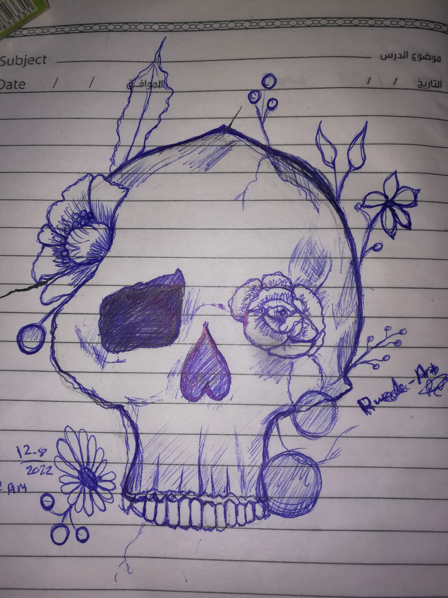
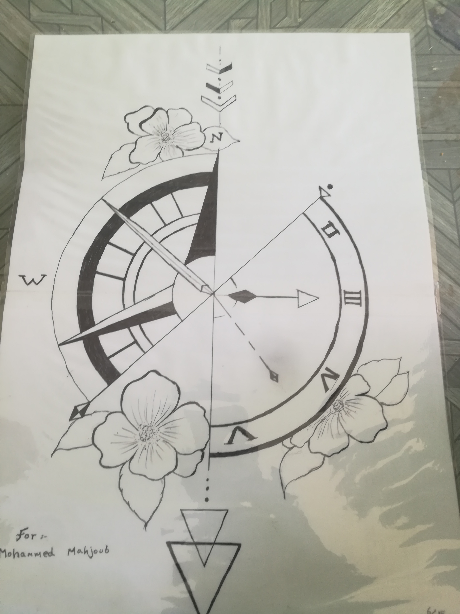

<!DOCTYPE html>
<HTML lang="ar"></HTML>
<head><title>Rweda adam </title>
<html lang="en">
<head>
<meta name="description" content="هذه الموقع يحتوى على بعض من اعمالى الفنية">
<meta name="keyworld" content="رسومات ’اعمال فنية؛ بورترية">
<meta name="author" content=" Rweda adam Haggar" >
<meta name="viewport" content="width=deviceـ width, initial ـscale=1.0">
<meta charset="utf-8">

</head>


<body style="background-color: antiquewhite;"></body>

<body>
 <h1> <p align="center"<strong> This is my drawing </strong>  </h1>

 <h1> <p  align ='right'  ></p><pre>هذه الرسمه توضح نوع من ارسم يسمى (مندالا) 
     وهو قداستخدمه فى رسم ساعه مع ادخال فراشة فى جزء من الرسمة  
    اخذت منى الرسمة يومان من العمل المتواصل 
    ولكننى استمتعت فى رسم هذه اللوحه
</pre>

</h1>


<h1><p align ="center" <pre> هذه رسمة لجمجمه مع مزيج من الورود 
    تعكس وجود جانب مشرق فى اى جانب مظلم 
</pre>

</h1>


<body>
<h1><p align = 'center' <pre>
    <br> اخر رسمةهدية توضح وجود بوصلة وبجانبها ساعه 
تعبر عن الاتزام بالوقت ومعرفة الاتجاه المناسب لاحياه
</pre>
</h1>



</body>


<br>
<audio controls>
<source src="Liamani Segura - This Is Me (From Camp Rock _ HSMTMTS)(MP3_160K).mp3">


</audio>


<h3> <br>
<p align ='center'<pre> رويداادم حقار
  <br>  خريجه طب بيطرى 
  <br>  متطوعه فى عدة مجالات 
   : لاتواصل معى 
  <br>رقم الهاتف(0928676270)
 <br> البريد الالكترونى (rwedaadam36@gmail.com )
</pre>


</h3>


</body>


</body>


</head>


</html>


